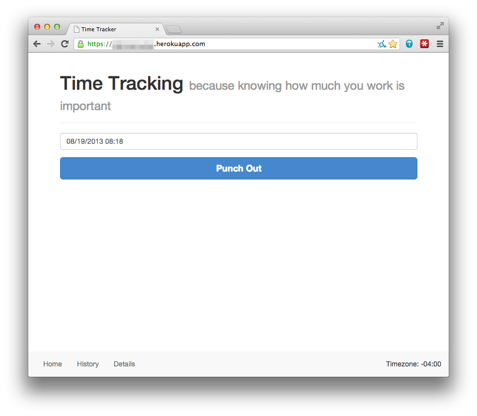
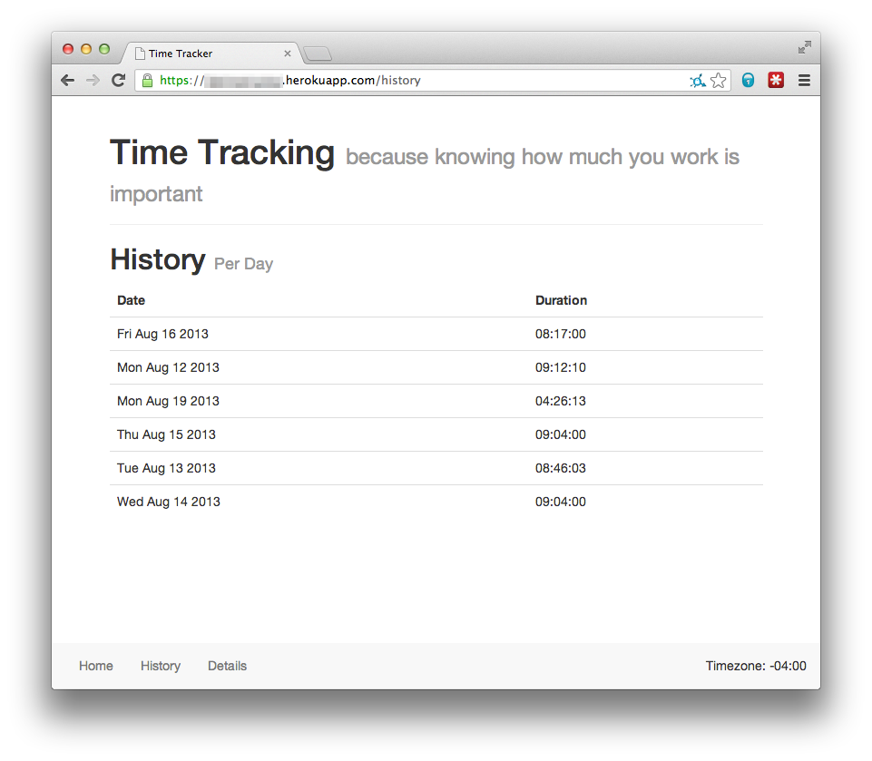
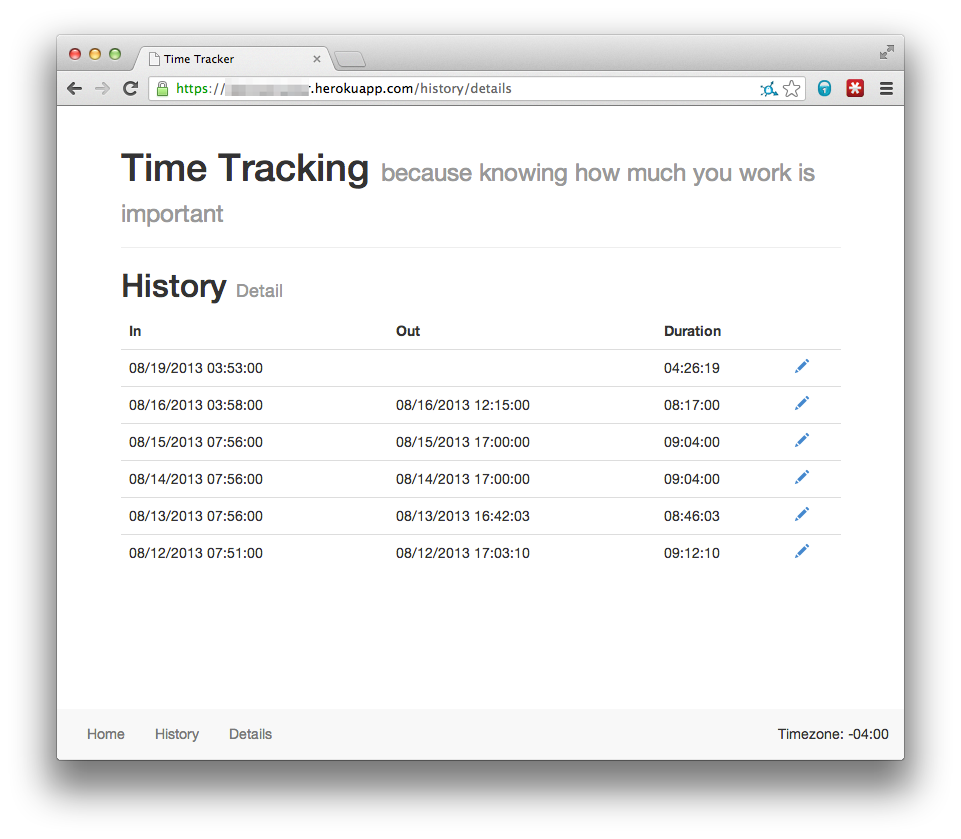
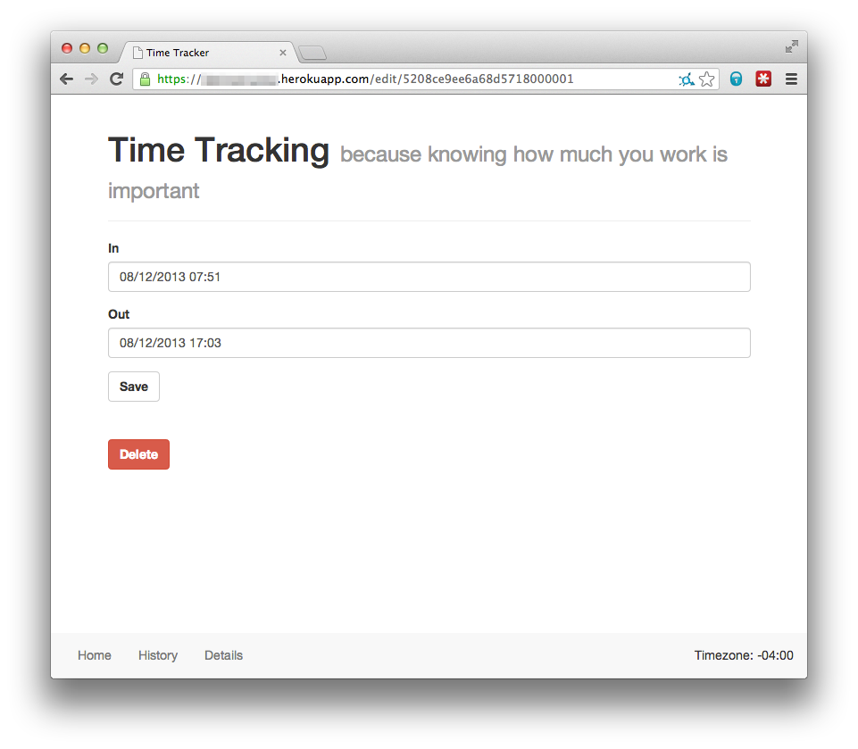

Time Tracker is a small one-user application to help you track your time. I use it to keep track of my hours at work. I was doing this with a spreadsheet, but decided something a little more automated would be nice. Time Tracker is built with Ruby and Sinatra and can be deployed to Heroku without any modifications. Just set the necessary environment variables.
Configuration
Config File
Set your local timezone in ./config/config.yml. The default is set to Eastern Time.
Environment Variables
There are three environment variables you need to set G_API_CLIENT, G_API_SECRET, and VALID_EMAIL.
-
G_API_CLIENT- Google API Client ID -
G_API_SECRET- Google API Client Secret -
VALID_EMAIL- A string of e-mail addresses that can use the application
To get your Google API client id and secret you will need to use the Google API Console.
Screenshots




License

This work is licensed under a Creative Commons Attribution-ShareAlike 3.0 Unported License. To attribute this work link to this repository.